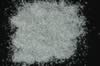

|
|
(For further information on spectroscopy, see:
http://speclab.cr.usgs.gov)
TITLE: Nephrite HS296 Amphibole DESCRIPT
DOCUMENTATION_FORMAT: MINERAL
SAMPLE_ID: HS296
MINERAL_TYPE: Inosilicate
MINERAL: Nephrite (Jade, Actinolite, Amphibole group)
FORMULA: Ca2(Mg,Fe+2)5Si8O22(OH)2
FORMULA_HTML: Ca2(Mg,Fe+2)5Si8O22(OH)2
COLLECTION_LOCALITY: British Columbia
ORIGINAL_DONOR: Hunt and Salisbury Collection
CURRENT_SAMPLE_LOCATION: USGS Denver Spectroscopy Laboratory
ULTIMATE_SAMPLE_LOCATION: USGS Denver Spectroscopy Laboratory
SAMPLE_DESCRIPTION:
"I-19 Nephrite 296B--British Columbia: Nephrite is a tough compact variety of either tremolite or actinolite, which is used as the second source of gem quality jade (see inosilicate, I-9 for other source, jadeite). This sample contains magnetite as an impurity, which contributes to its low reflectivity, but the ferric and ferrous features are still apparent at 0.7µ and 1.0µ, as is the accompanying fall off to the blue. The hydroxyl features are quite evident at 1.4µ and 2.33µ with a small feature at 1.9µ indicating including water."
Sieve interval 74 - 250µm.
Hunt, G.R., J.W. Salisbury, and C.J. Lenhoff, 1973, Visible and near-infrared spectra of minerals and rocks: VI. Additional silicates. Modern Geology, v. 4, p. 85-106.
IMAGE_OF_SAMPLE:

END_SAMPLE_DESCRIPTION.
XRD_ANALYSIS:
40 kV - 30 mA, 6.5-9.5 keV
File: neph296.out, -.mdi
References: JCPDS # 13-347; Huebner's reference patterns
Found: chlorite, Ca-amphibole, unindexed weak reflection at 1.804 Angstroms.
Comment: Some strong chlorite basal intensities present, but the (001) and (003) are weak. Fairly well crystallized tremolite is observed with a very good match to the JCPDS pattern.
J.S.Huebner, J. Pickrell, T. Schaefer, written communication(USGS 1994)
END_XRD_ANALYSIS.
COMPOSITIONAL_ANALYSIS_TYPE: None # XRF, EM(WDS), ICP(Trace), WChem
COMPOSITION_TRACE: None
COMPOSITION_DISCUSSION:
None
END_COMPOSITION_DISCUSSION.
MICROSCOPIC_EXAMINATION:
END_MICROSCOPIC_EXAMINATION.
SPECTROSCOPIC_DISCUSSION:
END_SPECTROSCOPIC_DISCUSSION.
SPECTRAL_PURITY: 1c2c3b4_ # 1= 0.2-3, 2= 1.5-6, 3= 6-25, 4= 20-150 microns
| LIB_SPECTRA_HED: | where | Wave Range | Av_Rs_Pwr | Comment |
|---|---|---|---|---|
| LIB_SPECTRA: | splib04a r 3462 | 0.2-3.0µm | 200 | g.s.= |
| LIB_SPECTRA: | splib05a r 4927 | 0.2-3.0µm | 200 | g.s.= |
| LIB_SPECTRA: | splib06a r 15827 | g.s.= | ||
| LIB_SPECTRA: | splib06a r 15839 | g.s.= |
{kind=link}